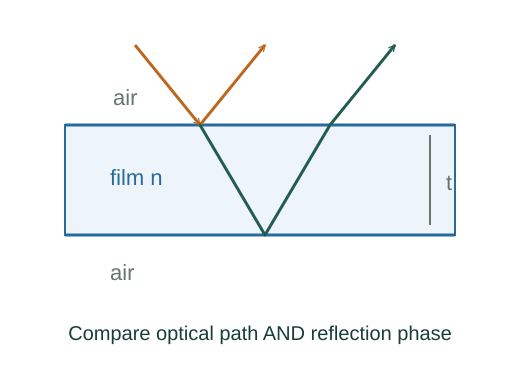

Derive thin-film interference conditions
Two reflected rays can differ in both optical travel distance and reflection phase. Accounting for both effects prevents swapping the bright and dark conditions.
What the symbols mean
t: film thickness; n: film refractive index; θt: angle within the film; λ₀: vacuum wavelength; Δφreflection: relative reflection phase.
When this applies
Coherent thin film with plane parallel boundaries. The simple bright/dark examples use normal incidence, negligible absorption, and exactly one reflection phase reversal.
Developing the argument

Count optical path difference
After comparing outgoing rays at a common wavefront, the ray visiting the lower boundary has extra optical path 2nt cos θt.
Include reflection phase
At an ordinary nonabsorbing dielectric boundary, reflection from lower to higher refractive index reverses the electric-field phase by π; higher to lower does not. Compare the two reflected rays.
Apply constructive and destructive phase rules
Constructive interference requires total phase difference an integer multiple of 2π. With exactly one π reflection shift at normal incidence, the reflected bright condition uses a half-integer optical path.
Check whether the shift count changes
If both reflected rays undergo the same phase shift, their relative reflection phase is zero. Then the bright and dark thickness conditions interchange.
A worked example
For an air–film–air layer with n = 1.5, the smallest nonzero reflected bright thickness at λ₀ = 600 nm is λ₀/(4n) = 100 nm.
Derivation behind this calculation ↗A point to keep straight
Do not assign the half-wavelength correction without inspecting both interfaces. Destructive cancellation also depends on matching amplitudes.
Check the assumptions and derivation ↗